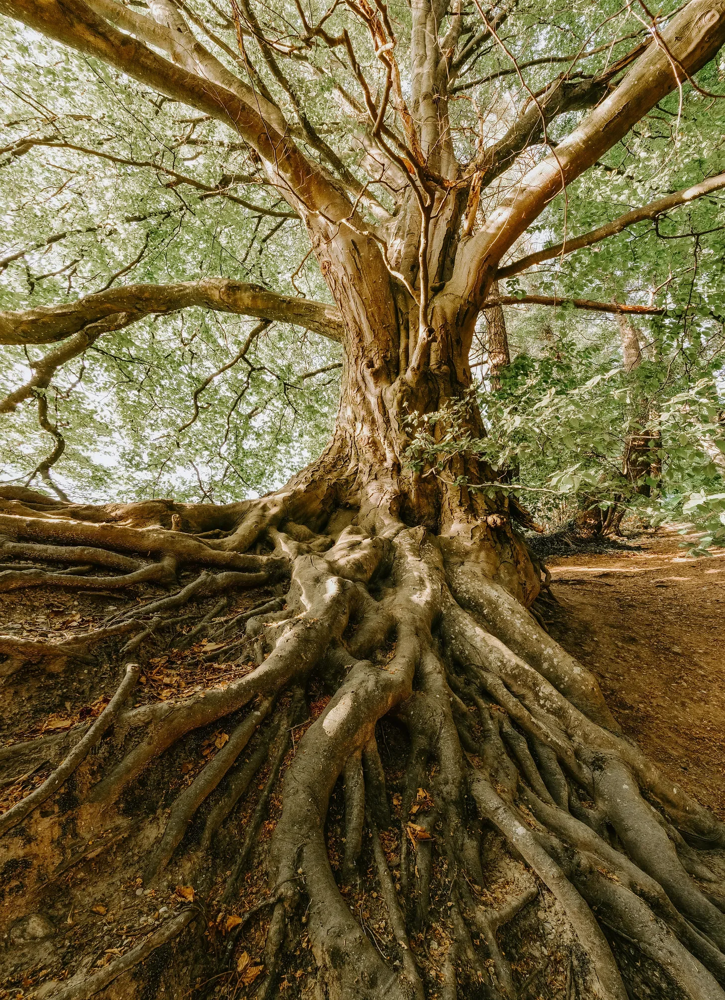

내 뿌리는 땅속 깊은 곳에서 솟아오른 거대한 손가락처럼 뒤틀리고 얽혀 있었다. 나는 그 손가락들 위에 서 있었다. 아니, 오히려 내가 그 손가락 중 하나였다. 세상에 남은 마지막 나무, 그것이 바로 나였다.
[My roots were twisted and intertwined, like giant fingers rising from deep within the earth. I stood upon those fingers. Or rather, I was one of them. The last tree on Earth, that’s what I was.]
내 몸통은 세월의 흔적을 고스란히 담고 있었다. 깊게 패인 주름 하나하나가 지나간 시간의 무게를 말해주는 듯했다. 햇살, 비, 바람… 수많은 계절의 손길이 내 몸통에 새겨져 있었다. 그 흔적들은 마치 오래된 일기장 같았다.
[My trunk was a tapestry of time. Each deep wrinkle seemed to speak of the weight of years gone by. Sunshine, rain, wind… countless seasons had left their mark on my bark. Those marks were like pages from an ancient diary.]
하지만 이제는 아무것도 느껴지지 않았다. 햇살도, 바람도, 비도 없었다. 세상은 고요하고 황량한, 침묵만이 가득한 곳이 되어 버렸다.
[But now, there was nothing. No sun, no wind, no rain. The world was a silent, desolate place, filled with nothing but stillness.]
내 잎사귀들은 아주 오래전에 모두 떨어져, 바람에 흩날리는 먼지처럼 사라져 버렸다. 한때는 잎사귀들이 만들어내는 부드러운 바스락거림으로 가득했던 내 가지들은 이제 앙상하게 드러나, 마치 뼈만 남은 팔처럼 하늘을 향해 뻗어 있었다.
[My leaves had long since fallen, scattered like dust in the wind. My branches, once filled with the soft rustling of leaves, were now bare, reaching towards the sky like skeletal arms.]
하지만 내 기억 속에는 여전히 그 푸르렀던 시절이 생생하게 남아 있었다.
[But in my memory, I could still see those vibrant days.]
따스한 햇살이 내 잎사귀들을 간지럽히고, 바람에 흔들리는 나뭇잎들이 아름다운 소리를 만들어내던 시절. 작은 새들이 내 가지에 둥지를 짓고, 다람쥐들이 내 몸통을 오르내리며 장난치던 시절.
[Days when the warm sun tickled my leaves, and the wind whispered through them, creating a symphony of sound. Days when tiny birds built their nests on my branches, and squirrels chased each other up and down my trunk.]
그리고… 인간들.
[And… the humans.]
그들은 처음에는 두렵기만 한 존재였다. 거대한 동물들을 타고 나타나, 날카로운 도구로 나무를 베어내던 그들의 모습은 공포 그 자체였다.
[They were frightening creatures at first. Appearing on the backs of giant beasts, wielding tools that could cut down a tree with a few swift motions.]
하지만 시간이 흐르면서, 나는 그들을 이해하기 시작했다. 그들은 단지 살아남기 위해 나무를 베었던 것이다.
[But as time passed, I began to understand. They cut down trees to survive.]
그들은 나무로 집을 짓고, 불을 피우고, 도구를 만들었다. 그리고 그들은 내가 제공하는 그늘 아래에서 휴식을 취하고, 사랑을 나누고, 아이들을 키웠다.
[They built homes from the wood, made fire, crafted tools. And they rested in my shade, loved, and raised their young.]
나는 그들의 웃음소리, 노랫소리, 이야기 소리를 들으며 조용히 그들과 함께 살아갔다.
[I lived alongside them, silently listening to their laughter, their songs, their stories.]
하지만 인간의 욕심은 끝이 없었다. 그들은 더 많은 것을 원했고, 더 빠르게 성장했다.
[But human desire knew no bounds. They wanted more, and they grew faster.]
숲은 점점 작아졌고, 공기는 매캐한 연기로 가득 찼다. 동물들은 사라졌고, 새들의 노랫소리도 들리지 않게 되었다.
[The forests shrank, the air filled with acrid smoke. The animals vanished, the songs of birds ceased.]
나는 내 형제들이 하나둘 쓰러지는 것을 지켜볼 수밖에 없었다. 그들의 울부짖음이 바람에 실려 내게 전해졌다.
[I watched as my brethren fell, one by one. Their cries echoed through the wind, reaching my ears.]
그리고 마침내, 내 차례가 되었다.
[And finally, it was my turn.]
거대한 기계가 내 앞에 나타났다. 귀청이 찢어질 듯한 소리와 함께 날카로운 톱날이 내 몸통을 파고들었다.
[A monstrous machine appeared before me. With an earsplitting roar, its teeth sank into my flesh.]
나는 비명을 지르고 싶었지만, 소리를 낼 수 없었다.
[I wanted to scream, but I had no voice.]
고통, 분노, 슬픔… 이 모든 감정이 나를 덮쳤다.
[Pain, anger, sadness… all these emotions washed over me.]
그리고 모든 것이 암흑 속으로 빨려 들어갔다.
[And then, everything went black.]
깨어났을 때, 나는 낯선 곳에 있었다.
[When I woke, I was in a strange place.]
내 몸은 산산조각이 났고, 뿌리는 더 이상 땅에 닿지 않았다.
[My body was fragmented, my roots no longer touched the earth.]
나는 더 이상 살아있는 나무가 아니었다.
[I was no longer a living tree.]
하지만 이상하게도, 나는 아직 죽지 않았다.
[But strangely, I was not dead.]
나는 인간들의 손에 의해 다시 태어났다.
[I had been reborn, at the hands of the humans.]
그들은 나를 조각하고 모양을 만들어 거대한 유리 돔 안에 넣었다.
[They had carved and shaped me, placed me within a giant dome of glass.]
나는 ‘마지막 나무'라는 이름표를 달고, 인간들의 구경거리가 되었다.
[I was labeled “The Last Tree,” a spectacle for humans to gawk at.]
그들은 내 앞에 서서 슬픈 표정을 지으며 과거를 후회한다고 말했다.
[They stood before me, their faces etched with sadness, speaking of regret for what they had done.]
하지만 그들의 눈에는 여전히 욕망이 가득했다.
[But in their eyes, I still saw that same desire.]
그들은 나를 통해 과거의 영광을 기억하고 싶어 했다.
[They wanted to remember their past glory through me.]
하지만 나는 그들이 진정으로 후회하고 있는지 알 수 없었다.
[But I couldn’t tell if they were truly sorry.]
나는 그저 침묵 속에서 서 있을 뿐이었다.
[I simply stood there, in silence.]
세상에 마지막으로 남은 나무, 과거의 망령이 되어.
[The last tree on Earth, a ghost of the past.]